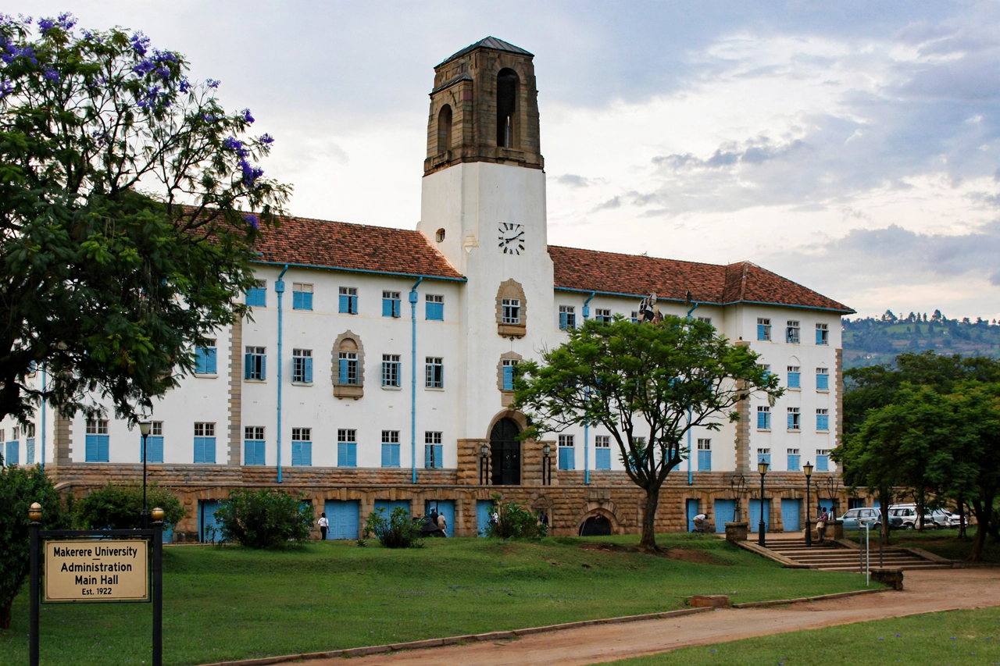

University of East Africa
| University of East Africa | |
|---|---|
| Active | 1963–1970 |
| Type | Federal public university |
| Constituent colleges | Makerere (Uganda), Nairobi (Kenya), Dar es Salaam (Tanzania) |
The University of East Africa was a federal university serving the newly independent East African states of Kenya, Uganda and Tanzania. Established in 1963, it brought together three existing university colleges under a single degree-awarding body modelled loosely on the University of London's federal structure.

Constituent colleges
- Makerere University College, Kampala, Uganda
- Royal College Nairobi (later University College Nairobi), Kenya
- University College Dar es Salaam, Tanzania
Dissolution
The federal arrangement broke down amid diverging national priorities, and the university was dissolved in 1970. Each college became an independent national university: Makerere University, the University of Nairobi, and the University of Dar es Salaam — all of which remain leading institutions in higher education in Africa.